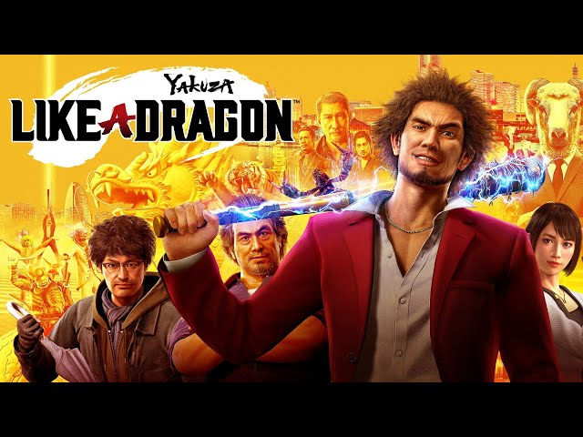

Oyun Hakkında
Tür: JRPG
Çıkış Tarihi: 10 Kasım 2020
Metascore: 84
Açıklama: Yakuza: Like a Dragon, Ryu Ga Gotoku Studio tarafından geliştirilen ve Sega tarafından yayınlanan, 2020 yılında PlayStation 4, Xbox One ve PC için piyasaya sürülmüş bir rol yapma video oyunudur. Yakuza serisinin sekizinci ana oyunu olan Like a Dragon, aynı zamanda serinin ilk sıra tabanlı RPG'sidir. Ichiban Kasuga, Tokyo'daki düşük rütbeli bir yakuza ailesinin üyesidir. En çok saygı duyduğu adamın klanını yok ettiğini keşfettikten sonra, ailesinin ihanetinin ardındaki gerçeği öğrenmek ve hayatını geri kazanmak için bir göreve atılır. Bu yolculukta Ichiban, şehirdeki dışlananlar için beklenmedik bir kahramana dönüşür. Yakuza: Like a Dragon, geleneksel Yakuza dövüş mekaniklerini sıra tabanlı RPG öğeleriyle harmanlar. Oyuncular, Yakın Muhafız, Müzisyen ve Şef gibi 19 farklı iş sınıfı arasından seçim yapabilir ve her birinin kendine özgü becerilerini ve yeteneklerini kullanabilirler. Yakuza: Like a Dragon, hem yeni gelenler hem de serinin hayranları için keyifli bir deneyim sunan, benzersiz ve yenilikçi bir RPG'dir. Sıra tabanlı dövüşleri, sürükleyici hikayesi ve unutulmaz karakterleri ile Like a Dragon, 2020'nin en iyi oyunlarından biri olarak kabul edilir.
Ekran Görüntüleri
